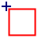
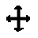
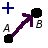
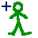

Primeros Pasos: Creando Habitaciones y Caminos
Habitaciones y Caminos
Veamos ahora cómo podemos usar PUCK para definir un mundo. Lo primero que haremos será crear un par de habitaciones unidas entre sí mediante un camino, de manera que el jugador pueda hacer algo como esto:
> mirar
Te encuentras al este del gran río Pecos. Hay muchos árboles bajos a tu alrededor. Un precario puente de madera lo atraviesa, hacia el oeste.
> ir hacia el oeste
Atraviesas el puente hacia el oeste cuidadosamente. Las tablas de madera que lo forman crujen inquietantemente; pero llegas sano y salvo a la otra orilla.
Te encuentras al oeste del gran río Pecos. Hay unos cuantos árboles altos a tu alrededor. Un tosco puente de madera lo atraviesa, hacia el este.
> ir por el puente
Atraviesas el puente hacia el este con sumo cuidado. Las tablas que lo componen emiten crujidos inquietantes; pero llegas sin incidencias a la otra orilla.
Te encuentras al este del gran río Pecos. Hay muchos árboles bajos a tu alrededor. Un precario puente de madera lo atraviesa, hacia el oeste.
Para ello, lo primero que debemos hacer es ir al menú "Archivo - Nuevo", que nos creará un nuevo mundo en blanco para trabajar.
Al hacer esto veremos a la izquierda el editor gráfico en blanco, que es donde colocaremos nuestros objetos; y a la derecha el panel de objeto asociado al mundo. En este panel aparece un formulario con una serie de propiedades del mundo. Es recomendable cubrir al menos el nombre corto y el nombre largo, que AGE utilizará para identificar el mundo. El nombre corto debería estar formado por una única palabra, aconsejablemente de no más de doce caracteres; mientras que el nombre largo puede ser un título de la longitud que se desee, y es lo que se mostrará al jugador como nombre de la aventura.
El resto de campos (autor, versión, fecha...) son datos meramente informativos que se mostrarán al jugador cuando vaya a cargar el juego.
Si queremos dejar estas propiedades para más tarde, o modificarlas en algún momento, es conveniente saber que podemos volver cuando queramos a este panel de mundo, simplemente seleccionando una zona vacía del editor gráfico.
Pero pasemos a la acción: vamos a crear las dos habitaciones del ejemplo, situadas una al oeste de otra y separadas por un camino (puente). Para ello hacemos lo siguiente:
-
Hacemos click en icono de la herramienta "añadir habitación" de la barra de herramientas: 
- Movemos el cursor por el editor gráfico. Veremos que aparece un cuadrado (la habitación que estamos creando) que se mueve junto a nuestro cursor. Hacemos click, y la habitación quedará fija en el editor. A la derecha podremos ver su panel de objeto.
- Hagamos que esta habitación represente la orilla oeste del gran río Pecos. Para ello, cubrimos los campos del panel de objeto:
- Donde pone "Nombre único", pondremos un nombre corto como por ejemplo "Oeste Pecos". Este nombre no se mostrará al jugador, se utiliza para identificar internamente la habitación en el juego y distinguirla de las demás. Nosotros también lo utilizaremos cuando nos queramos referir a esta habitación en el futuro.
- Donde pone "Descripciones" irán las descripciones de la habitación, que son lo que se muestra al jugador cuando teclea "mirar" o cuando entra en la misma. Puede extrañarte que no haya una sola "Descripción", sino un campo para "Descripciones". Esto es porque las descripciones en AGE no son un texto estático, sino algo que puede variar según distintas condiciones (por ejemplo, la descripción de una localidad puede ser distinta según si es de día o de noche). El sistema que se utiliza para hacer posible esto es que la descripción que se muestra al jugador esté formada por distintos trozos que se pueden mostrar o no dependiendo de las condiciones que se den. En este caso, nos conformaremos con una descripción estática, con lo cual sólo necesitaremos uno de estos trozos, y sin ninguna condición asociada. Para ello, donde pone "Descripción" teclearemos la descripción completa de la habitación:
Te encuentras al oeste del gran río Pecos. Hay unos cuantos árboles altos a tu alrededor. Un tosco puente de madera lo atraviesa, hacia el este.
Y pulsamos el botón "Añadir". Vemos que la descripción introducida aparecerá en el cuadro "Descripciones", precedida de la palabra "Siempre". Esto último quiere decir que esta descripción se mostrará siempre que un jugador mire la habitación, es decir, no está sujeta a condición alguna.
- Por el momento no necesitamos añadir nada más a esta habitación. Es bueno saber que, si más tarde queremos modificar sus datos, basta con hacer click sobre su representación en el editor gráfico (cuando no estemos usando ninguna herramienta) para poder ver y modificar de nuevo su panel de objeto.
-
Del mismo modo que creamos la habitación anterior, creamos una nueva para representar la orilla este del río. Para ello, tenemos que volver a hacer click en la herramienta "añadir habitación", ya que cada uso de la herramienta sirve para añadir una sola vez. Colocaremos la nueva habitación a la derecha de la anterior, dado que se encuentra al este. Si no hemos dejado espacio suficiente en el editor gráfico para colocarla, podemos utilizar las herramientas de desplazamiento y zoom:

Para usar la herramienta de desplazamiento, hacemos click sobre su icono en la barra de herramientas. A continuación, hacemos un click sobre el editor gráfico, y movemos el cursor: los objetos del editor se desplazarán con él. Con otro click dejamos de usar la herramienta.
La herramienta zoom se utiliza del mismo modo. Después de hacer click en su icono y en el editor gráfico, podemos mover el ratón hacia arriba para alejar la vista o hacia abajo para acercarla.
- Rellenamos el nombre único y la descripción de la nueva habitación de la misma manera que lo habíamos hecho con la anterior, reflejando que estamos al este del Pecos.
- Ahora vamos a crear la conexión entre las dos habitaciones. Como podemos ver en el texto de lo que queremos conseguir, las dos localidades deben estar unidas por un puente que cruza de este a oeste. El puente se debe poder cruzar en las dos direcciones; pero es importante saber que en AGE los caminos son de una sola dirección. Por lo tanto, para permitir el tránsito en las dos direcciones tenemos que crear dos caminos: uno de oeste a este y otro de este a oeste. Nótese que, aunque esto pueda parecer incómodo para casos simples, hace el sistema más poderoso, porque se puede dar tratamiento distinto a cada sentido del camino, incluyendo permitir el paso en un solo sentido, tener descripciones distintas para ambos, hacer que suceda algo al cruzar en un sentido dado, etc.
- Para crear los caminos, utilizaremos la herramienta "añadir relación estructural" de la barra de herramientas, que está identificada por este icono:

Las relaciones en AGE son formas de expresar cualquier tipo de relación, permanente o temporal, entre dos objetos. Existen dos tipos de relaciones: relaciones estructurales y relaciones auxiliares. Las estructurales se llaman así porque son las que definen la estructura del mundo: nos dicen dónde están los objetos. También se caracterizan porque un objeto no tendría ningún sentido si no estuviese (o al menos pudiese estar) conectado al resto del mundo mediante relaciones estructurales. Las relaciones auxiliares se utilizan para definir otros aspectos de las interacciones entre objetos.
- Un camino se modela en AGE como una relación estructural entre una habitación y otra, de ahí que se cree con esta herramienta. Para crear un camino entre las dos habitaciones, seguimos los siguientes pasos:
- Hacemos click sobre la herramienta "añadir relación estructural"
- Hacemos click sobre la habitación que representa el Oeste del Pecos.
- Hacemos click sobre la otra habitación. Veremos que aparece una flecha entre las dos habitaciones, que representa el camino que las une.
- Al igual que los objetos, podemos ver que las relaciones también tienen paneles de objeto. Nada más crear esta relación camino, podremos ver en la parte derecha de la ventana de PUCK su panel correspondiente. El panel tiene algunos campos ya cubiertos, como son las habitaciones origen y destino (que son las que marcamos en el mapa) y la dirección estándar, que es un punto cardinal asociado al camino. Como habíamos colocado una habitación a la derecha de la otra, el camino aparecerá automáticamente marcado con la dirección estándar "este". Esto implica que se podrá utilizar con comandos como "ir al este ". Si a pesar de haber colocado las habitaciones de esa manera éste no era el comportamiento que queríamos, podemos cambiar la dirección estándar (o quitarla para no tener ninguna) en el panel de objeto correspondiente al camino. Del mismo modo podríamos cambiar en cualquier momento las habitaciones origen y destino, podemos ver que para esto se utiliza el "nombre único" que hace referencia a cada habitación.
- Debajo de estos campos podemos ver una lista, inicialmente vacía, de comandos personalizados. En esta lista podemos introducir todas aquellas palabras que el jugador pueda usar para referirse a este camino además del punto cardinal dado por la dirección estándar. Como queremos que el jugador pueda teclear cosas como "ir puente" o "ir por el puente", añadimos "puente": para ello, introducimos la palabra donde pone "Comando" y pulsamos el botón "Añadir".
- A continuación podemos ver un área para descripciones, que ya debería resultarnos familiar. Las descripciones para los caminos funcionan exactamente igual que para las habitaciones; pero se muestran cuando el jugador cruza el camino correspondiente. Así, para obtener el comportamiento que buscamos para este camino, debemos teclear en el campo "Descripción":
Atraviesas el puente hacia el este con sumo cuidado. Las tablas que lo componen emiten crujidos inquietantes; pero llegas sin incidencias a la otra orilla.
- Con esto tenemos todo lo que necesitábamos por el momento para este camino. Cuando volvamos a necesitar modificar este panel de objeto, basta con que hagamos click sobre la flecha que representa el camino en el mapa para acceder a él.
- Para crear el otro camino, como es imaginable, basta con repetir el mismo proceso; pero haciendo click primero sobre la habitación del este y luego sobre la del oeste. Nos aparecerá otra flecha en dirección opuesta, que no se solapa con la anterior para que podamos hacer click fácilmente en cualquiera de ellas accediendo a su correspondiente panel de objeto. La descripción y el comando personalizado se introducen del mismo modo.
Creando un Personaje Jugador
Con esto ya hemos creado un mínimo mundo con el que jugar; pero nos falta un elemento necesario para que la aventura tenga sentido: un personaje que pueda recorrerlo. En AGE, los jugadores están en la piel de personajes que habitan en el mundo e interactúan con él (aunque también pueden crearse personajes que no sean jugadores). Por lo tanto, incluso en un juego para un solo jugador deberemos poner al menos un personaje que represente a ese jugador para que se pueda jugar. Para ello, utilizaremos la herramienta "añadir personaje" de la barra de herramientas:

Y haremos lo siguiente:
- Para usar esta herramienta, procedemos de la misma manera que cuando añadimos habitaciones al mundo: hacemos click sobre su icono en la barra de herramientas, deslizamos el cursor por el editor gráfico y hacemos click sobre el punto en que queremos dejar al personaje. Será conveniente que lo coloquemos cerca de la habitación donde queremos que el jugador aparezca al principio del juego; pero -ojo, importante- no dentro de ella. Esto es porque en el editor gráfico el hecho de que algo esté dentro de una habitación no se representa colocando su icono dentro de la misma; sino uniendo la habitación a ese algo mediante una relación estructural. Representar unas cosas dentro de otras podría parecer más natural a simple vista; pero resultaría engorroso cuando una habitación contuviese gran número de personajes o cosas.
- Así pues, el siguiente paso será crear la relación estructural entre la habitación (que puede ser la oeste o la este, dependiendo de dónde queréis que empiece el personaje: lo que creamos con PUCK es siempre el estado inicial del mundo, que luego podrá cambiar durante el juego cuando los personajes se muevan) y el personaje. Para ello, utilizamos la herramienta "crear relación estructural" que ya conocemos:
y hacemos click primero sobre la habitación y luego sobre el personaje (el orden es importante). Esto nos creará una relación estructural de tipo "contiene" que significa que la habitación contiene al personaje, y que, al contrario que la relación "camino" que veíamos antes, no tiene nada que configurar.
- Para que todo funcione, sólo falta una cosa: especificar que el personaje que hemos creado es un jugador. Para ello, hacemos click sobre él para obtener su panel de objeto, y marcamos la casilla que dice "jugador". Esto hace que, cuando alguien arranque la aventura, el AGE lo ponga en la piel de este personaje (en juegos multijugador las cosas son algo más complicadas; pero ya las veremos).
- Si hurgamos en el panel de objeto asociado al personaje podemos ver que tiene diversos datos configurables, como por ejemplo nombre único y descripciones. Estas últimas funcionan del mismo modo que las de las habitaciones y caminos, y en este caso se mostrarían si el jugador se mirase a sí mismo. Puedes cubrirlas si quieres; aunque no son necesarias para el comportamiento que queríamos.
Ahora sí que tenemos un mundo de AGE completo y jugable (aunque, de momento, no muy emocionante). No se puede decir que haya sido difícil, ¿verdad? Pues ahora vamos a mejorarlo. Será en la siguiente sección del tutorial: Seres Inertes.
2. Descripciones adicionales y cosas (Seres Inertes)
3. Puertas y contenedores
4. Un poco de código y descripciones dinámicas
5. Multijugador y plantillas de jugador
6. Personajes seudointeligentes
7. Armas, armaduras y enemigos |